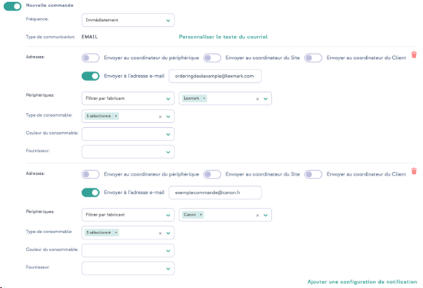

Gestion des consommables
Principe
La gestion des consommables dans Focalist
-
Ensemble complet de fonctionnalités permettant d’automatiser l’exécution et le réapprovisionnement des consommables pour un parc d’imprimantes géré
-
Détection des consommables proches de la fin de vie
-
Recommandation proactive de livraisons avant la fin de vie effective
-
Détection des exceptions et flux d’exécution des processus d’approbation associés
-
Liens avec les processus de traitement et de livraison en arrière-plan et administration de ces processus
-
Gestion du catalogue de consommables (consommables-articles de remplacement) et des fournisseurs de services (revendeurs/distributeurs de consommables)
Quel est le processus de traitement du toner ?
-
Ensemble complet de processus permettant d’automatiser le réapprovisionnement des cartouches de toner pour un parc d’imprimantes géré
-
Détection des cartouches de toner presque vides (cartouche de toner dont le niveau est faible, éléments de maintenance, etc.)
-
Recommandation proactive pour l’envoi de nouvelles cartouches avant que les cartouches existantes ne deviennent vides
-
Détection des exceptions et flux d’exécution des processus d’approbation associés
-
Liens avec les processus de traitement et de livraison en arrière-plan et administration de ces processus
-
Gestion du catalogue de cartouches de toner (cartouches de remplacement) et des fournisseurs de stock (revendeurs de consommables)
Ajout d’un consommable (installation du premier consommable)

1. Focalist analyse les périphériques et télécharge les informations sur le consommable installé depuis l’imprimante. Les informations suivantes sont téléchargées : numéro de série, numéro de catalogue de performance, niveau.
Remarque : toutes les données ne sont pas disponibles sur tous les périphériques. Dans certains cas, l’imprimante ne fournit pas la capacité ou le niveau exact.
2. Focalist vérifie si le modèle du consommable installé se trouve déjà dans la base. S’il n’est pas présent, un nouveau consommable sera ajouté.
Alarmes possibles
-
Consommable endommagé : Focalist peut détecter que le consommable installé dans le périphérique renvoie une valeur incorrecte, très probablement parce qu'il est endommagé. Le cas échéant, l’alarme est ajoutée : Consommable endommagé
Vérification de l’état du consommable

Remplacement de consommables

Ajout automatique d’une commande

Alertes
Focalist génure une liste d'alertes.
Si l’option Clients > Client sélectionné > Configuration de la commande > Vérifier si le toner a été correctement installé est activée, la commande sera bloquée en cas d’alertes non résolues.
Liste des alertes
-
Niveau inconnu
Indique que le matériau n’a pas été mis à jour lors de la dernière inspection en raison de problèmes avec les données récupérées sur l’imprimante. Nous n’avons pas été en mesure de déterminer le matériau auquel les données étaient associées.
-
Toner inefficace
Le rendement du toner est inférieur à celui estimé dans Clients > Client sélectionné > Configuration de la commande > Bloquer la commande de toner, si son efficacité est inférieure à (%).
-
Échange incorrect
Lors du remplacement du consommable, l'erreur peut être due à plusieurs facteurs :
Il n’y avait pas de commande.
La commande a été passée mais son état n’était pas "Installation en cours".
Le nouveau consommable possède un niveau inférieur à 80 %.
Le consommable portant le numéro de série indiqué a déjà été installé quelque part.
Le consommable a été remplacé avant d’avoir atteint le niveau de remplacement configuré (il est possible de le définir dans les commandes).
Le modèle du consommable commandé n'est pas compatible avec l’imprimante.
-
Non mis à jour
Indique que le consommable n’a pas été mis à jour lors de la dernière inspection en raison de problèmes avec les données récupérées sur l’imprimante.
Commandes en attente
Dans cette section, vous pouvez ajouter des informations complémentaires à votre commande et la marquer comme envoyée ou supprimée. 
-
Référence commandée
Numéro complet de la commande, numéro de catalogue des ressources, parfois différent de ceux renvoyés par l’imprimante, l’imprimante ne renvoie souvent que la couleur. Il peut être ajouté dans Paramètres > Numéros de modèle des consommables.
-
Coursier+Numéro d’expédition
Vous pouvez indiquer une personne responsable de la livraison. .
Elle peut être ajoutée dans Paramètres > Coursier.
-
Référence d’expédition
Note supplémentaire ajoutée à la commande.
Toutes les commandes
Liste récapitulative de toutes les commandes générées par l’application.
Cette liste contient à la fois les commandes précédentes et les commandes en cours de traitement, triées par défaut dans la colonne "Date d’expédition".
Ventilation des commandes vers différents destinataires
Si un parc dispose de plusieurs fournisseurs il est possible de ventiler les commandes en fonction de critères attribués aux différents fournisseurs.
Ainsi, par exemple, vous pouvez envoyer toutes les commandes de toner et photoconducteur des périphériques Lexmark vers une boîte mail de gestion de commandes Lexmark, et pour les consommables d'imprimantes Canon, vers une boîte mal Canon, vous pouvez configurer les notifications distinctes.
Les filtres mis à disposition pour aiguiller la commande vers le bon fournisseur incluent :
• le nom du fabricant du périphérique
• le nom du modèle du périphérique
• un périphérique donné
• le type de consommable ou pièce d'usure concerné
• la couleur du consommable
• le fournisseur du consommable
Pour chaque réglage supplémentaire cliquez sur Ajouter une configuration de notification.
Attention le modèle de notification est commun à toutes les configurations.

Tous les consommables
Liste de tous les consommables qui peuvent être détectés à partir des imprimantes.
Pour chaque élément, il existe des informations sur la ressource, le périphérique et le client chez lequel il se trouve. En outre, il y a des informations sur l’état de la dernière commande ainsi que sur la date de la première détection de consommables dans l’imprimante (date d’installation).
Le niveau correspond au niveau de la dernière détection.
Vous pouvez également cliquer sur le bouton d’action « Détails » pour vérifier l’évolution de la consommation de toner au cours de la semaine, du mois ou de l’année écoulés.
En outre, vous pouvez cliquer sur le bouton d'action Détails pour vérifier l'évolution de la consommation de toner au cours de la semaine, du mois ou de l'année écoulée. L'évolution des ressources s'affiche dans différentes couleurs, comme dans l'écran ci-dessous :